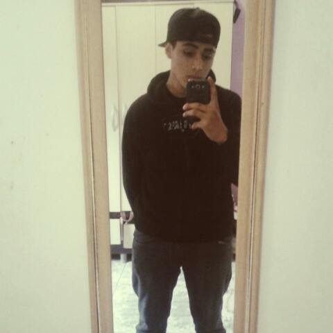

Curriculum Vitae

Dados Pessoais
- Rafael Sanzio
- Rua Pedro Armando Donizete de Pádua, 130 - Jardim Palmira - Guarulhos/SP
Objetivos
- Atuar na área de segurança da informação
- Atuar na área de Programação
Atuar na área de suporte técnico
Formação
- E.E Parque Continental Gleba I
- Escola Técnica Estadual Getúlio Vargas
- Universidade Presbiteriana Mackenzie
Experiencia Profissional
Aplicação de normas técnicas ABNT/ASTM/DIN/ISO/CET nas amostras a serem
ensaiadas nos laboratórios de sinalização viária e mecânico.
Execução de Ensaios Mecânicos: Controle dimensional, Tração, compressão, dureza e cisalhamento
entre outros.
Execução de Ensaios de Luminância: Fotoluminescência e Retrorrefletância.
Execução de Ensaios de Corrosão Acelerada: Salt spay, Câmara úmida e Envelhecimento
acelerado.
Execução de Ensaios Metalográficos: Liquido penetrante.
Emissão de Relatórios para o cliente.
Manutenção Preventiva.
Inspeção nos Fornecedores.
Sobre Min
Sou uma pessoa bastante determinada e focada no meu trabalho, procuro manter sempre o ambiente profissional o mais organizado possivel, pois com isso acaba facilitando o nosso dia-dia no local de trabalho.
Devido a minha antiga experiência profissional acabei desenvolvendo habilidades de trabalhar em equipe e sobre pressão, e por fim gosto de praticar exercicios fisicos e jogar também no meu tempo livre.